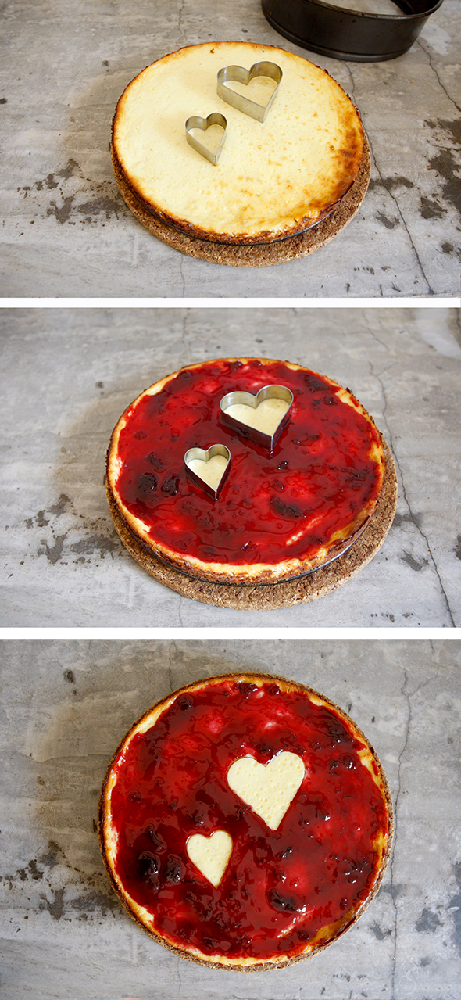

Ein amerikanischer käsekuchen wird zum Valentinstag Knüller. Bevor man die Marmelade auf den erkalteten Kuchen streicht legt man Austechförmchen auf den Kuchen und nimmt diese wieder weg, wenn die Marmelade erkaltet ist.
Un pastel de queso americano cambiado a a ser lo mas en el Día de San Valentín. Antes ponerla mermelada en el pastel enfriado, pones unos moldes de galletas en el pastel y los quitas en cuando la mermelada este seca.
An American cheesecake for Valentine's Day. Before stroking the jam on the cooled cake you put some cookie shapes on the cake and take them away when the jam has cooled.
